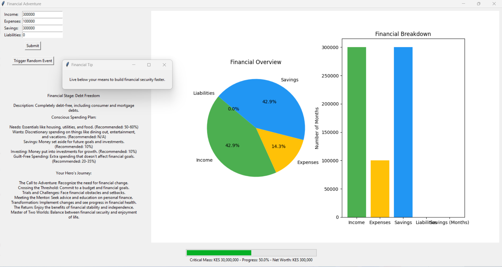

Projects
Brief of the Application: The application is a Financial Independence Tracker developed using Python's tkinter for the GUI and matplotlib for chart visualizations. It allows users to input financial data such as income, expenses, savings, and liabilities, and calculates the user's financial stage based on Joshua Sheats' 7 stages of financial independence. The app also provides users with a conscious spending plan, their hero's journey to financial independence, and charts representing their financial overview. Random financial events can be triggered, which update savings and liabilities. Periodic financial tips are also displayed.
Financial Adventure
Key Features:
- Financial Stage Calculation: Determines the user's financial independence stage based on inputs.
- Conscious Spending Plan: Displays essential, discretionary, and investment spending categories.
- Hero's Journey: Provides a narrative outlining phases of the user's financial journey.
- Charts: Visualizes financial data with pie and bar charts.
- Random Events: Simulates real-world financial events, adjusting savings and liabilities.
- Financial Tips: Periodically shows financial advice to the user.
How the Application Works
The Financial Adventure application helps users track their progress towards financial independence. It allows users to input their financial data and calculates their financial stage based on predefined criteria. The application also provides visualizations and insights to guide users in their financial journey.
The 7 Stages of Financial Independence
Stage 0 - Total Financial Dependence
At this stage, individuals are dependent on others for financial support. To move to the next stage, focus on becoming financially independent by earning an income and managing basic expenses.
Stage 1 - Financial Solvency
Individuals at this stage are able to support themselves and stay current on bills. To advance, start building a small emergency fund and managing discretionary spending.
Stage 2 - Financial Stability
In this stage, individuals are self-supporting with some savings. To progress, work on paying off debts and increasing savings to achieve financial security.

Stage 3 - Debt Freedom
Being debt-free (excluding or including a mortgage) is the hallmark of this stage. Continue to build an emergency fund and start investing for the future.
Stage 4 - Financial Security
At this stage, investment income covers basic living costs. To move forward, focus on enhancing investments and preparing for lifestyle upgrades.
Stage 5 - Financial Independence
Investment income covers the current lifestyle. Continue to diversify investments and plan for future goals and desires.
Stage 6 - Financial Freedom
At this stage, investment income supports big dreams and lifestyle upgrades. Focus on stewardship and legacy planning to move to the final stage.
Stage 7 - Financial Abundance
Investment income far exceeds spending needs. Concentrate on giving back, creating a legacy, and enjoying financial peace.